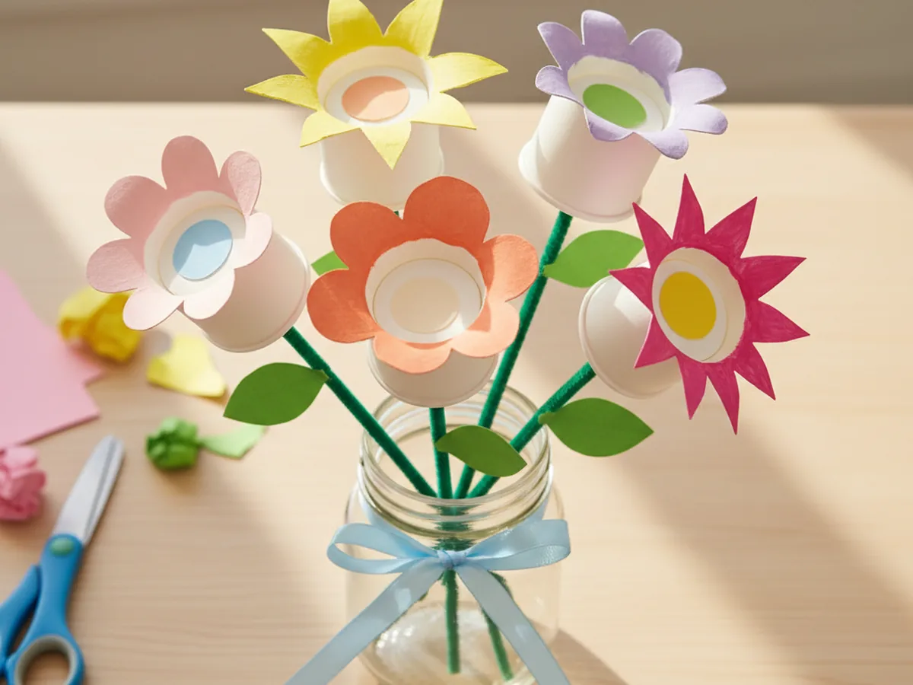
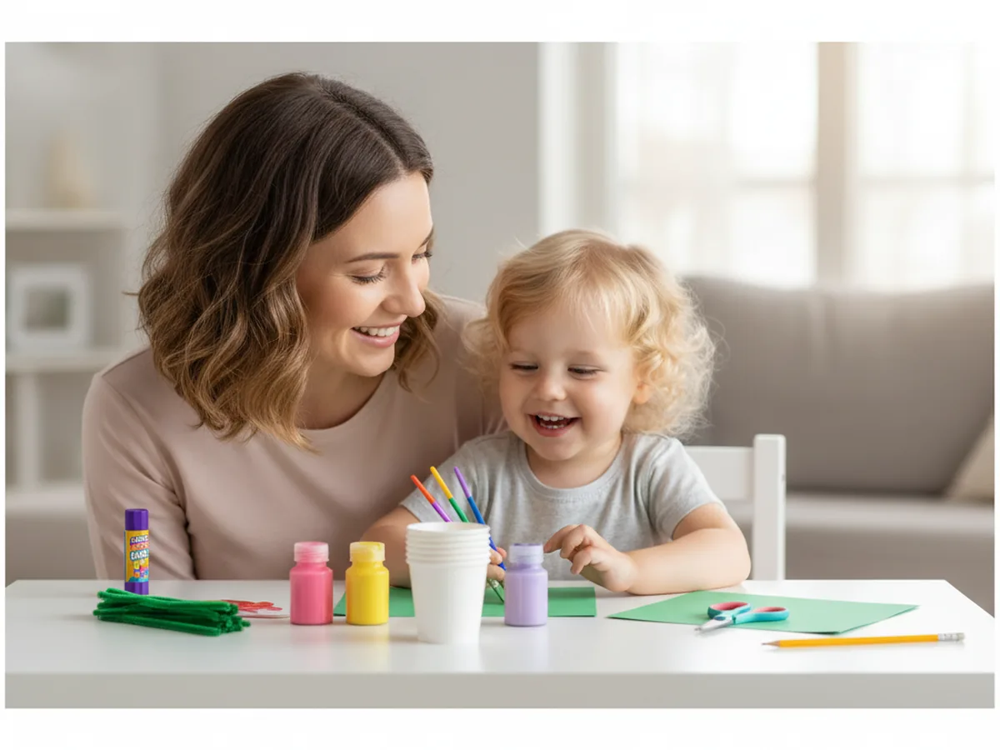
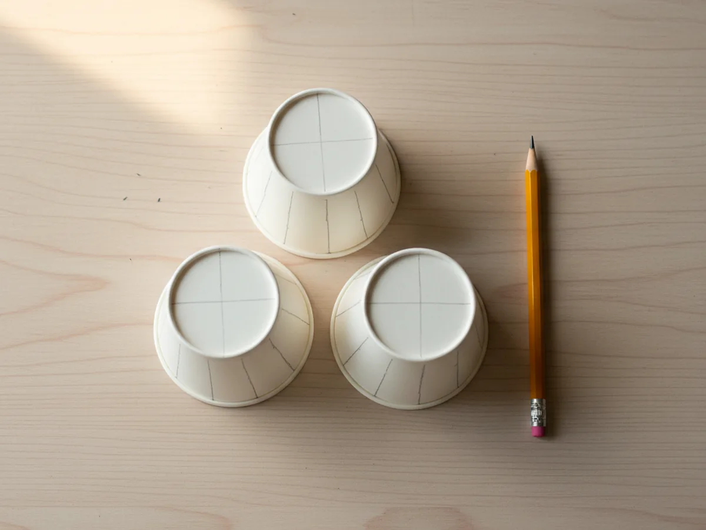
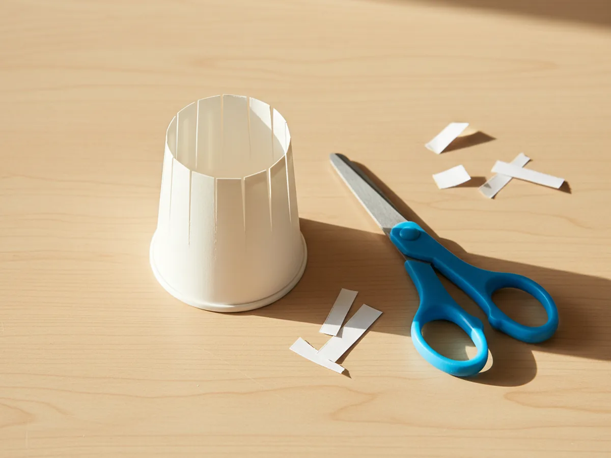
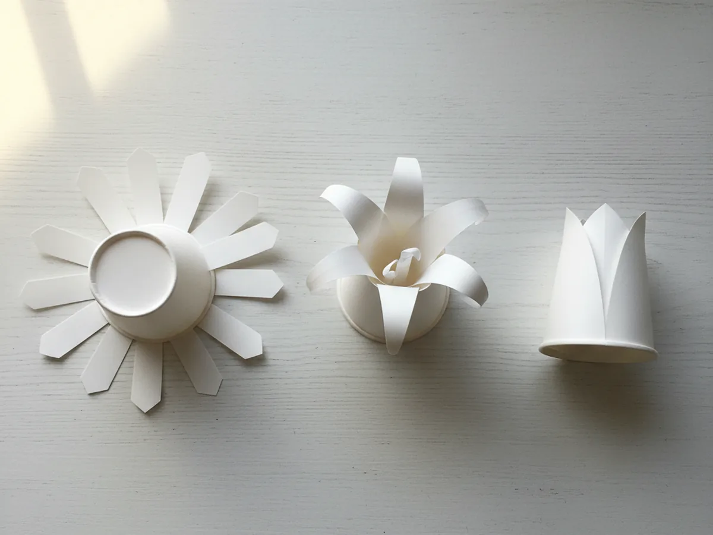
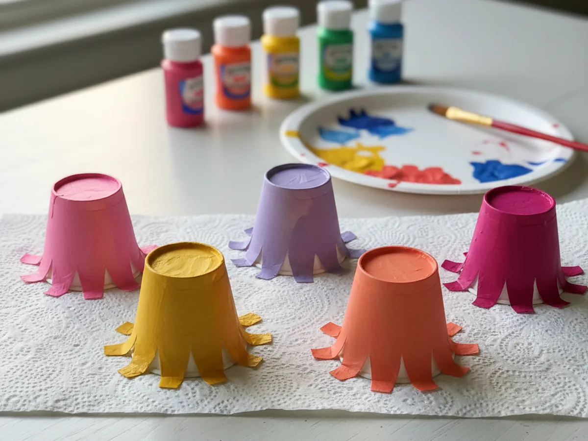
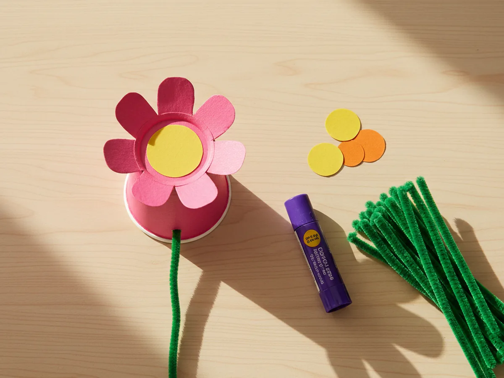
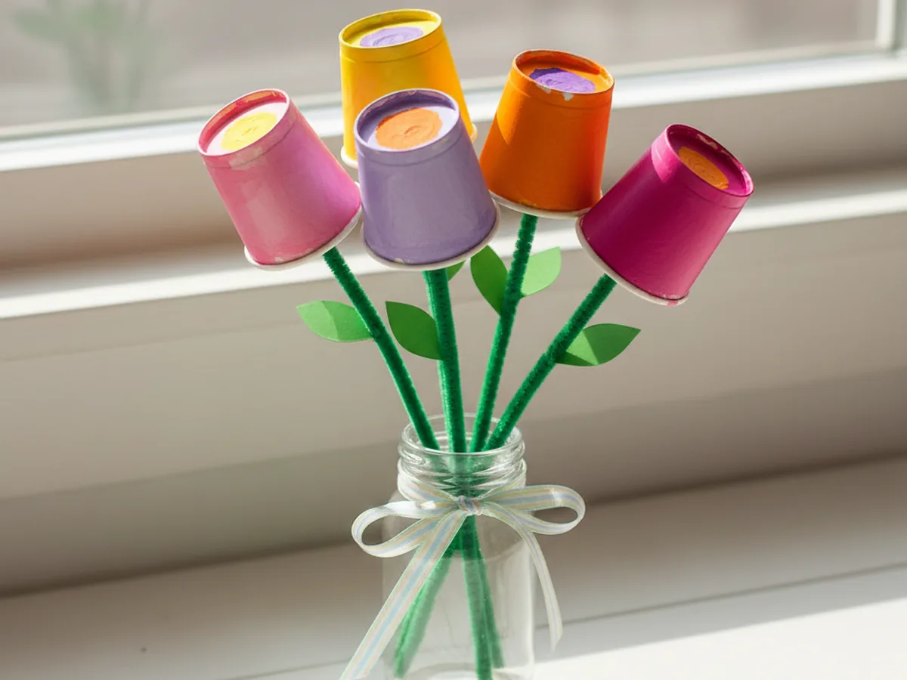

There is something magical about turning a stack of plain white cups into a bright, cheerful bouquet of flowers. This craft using paper cups is one of those projects that feels almost too easy until you see how proud your little one looks once it is finished. With a few snips, a little paint, and some pipe cleaner stems, you can make a whole windowsill garden together in about half an hour. 🌷
What I love most about this easy craft using paper cups is how forgiving it is. Wobbly petals, runny paint, lopsided leaves: it all comes out adorable in the end, which is exactly the kind of low-stress craft this mama needs on a Tuesday afternoon.
Why Kids Love This Craft
Kids adore this craft using paper cups because it has a true ta-da moment. The cup looks so plain at first, but the second your child cuts the slits and folds the petals open, a flower blooms out as if by magic. That little reveal is genuinely satisfying for young hands, and it feels like they invented the trick themselves.
This paper cup flower craft is also wonderful for fine motor practice. Cutting straight slits down the side of the cup is great early scissor work because the lines are short and the rim guides them. Painting the petals builds wrist control, and twisting the pipe cleaner stems is sneakily good for tiny finger muscles. Even a four year old can handle most of this simple paper cup craft with a little gentle help from mom.
There is also that lovely emotional moment when you set the finished bouquet on a windowsill, hand it to grandma, or pop it into a clean jar on the kitchen table. A handmade bouquet, even a paper one, just feels like love in a vase. That little glow of pride your child feels is exactly the magic of crafting together. 💐

What You'll Need
Here is everything you need for this craft using paper cups. I always pull the supplies together first so my little one can dive in the moment they sit down at the table.
- Dixie 3 oz Bath Cups (100 ct), the perfect small size for tiny flower blooms with extras for practice cups.
- Crayola Washable Kids Paint (10 colors), bright spring shades that wash off little hands and clothes easily.
- BOSOBO Paint Brushes Set, several sizes so kids can paint petals and tiny details with the right tip.
- Crayola Construction Paper (240 sheets, 12 colors), green for leaves plus pops of yellow and orange for flower centers.
- Pipe Cleaners 100 Pack (assorted colors), green ones make perfect bendable flower stems for the bouquet.
- Elmer's Disappearing Purple Glue Sticks (30 pack), washable and ideal for sticking centers and leaves in place.
- Fiskars 5 inch Kids Scissors, the right size for small hands cutting the petal slits safely.
- Crayola Broad Line Markers (10 classic colors), for adding tiny dots, swirls, or a name on the petals.
- A pencil for drawing the petal lines and a small jar or vase for the finished bouquet.
Step-by-Step Instructions
This craft using paper cups moves through six gentle steps that feel almost like a little game. Take your time, follow along together, and let your child do as much as they can comfortably manage.
Step 1: Mark the Petal Lines
Turn a small paper cup upside down on the craft table so the open rim faces up at you. Using a pencil, lightly draw 6 to 8 evenly spaced vertical lines from the rim down toward the closed base, stopping each line about a half inch before the bottom. These lines become the cutting guide for the petals in the next step. Each cup will become one flower, so plan for two or three cups if you want a small bouquet, or four or five for a fuller one.

Step 2: Cut the Petal Slits
Following each pencil line, carefully snip a slit from the rim down toward the base of the cup. Stop each cut at the line you marked, leaving the bottom of the cup connected so the petals stay attached. Once all the slits are cut, the cup will look a bit like a closed tulip with the petals still pointing straight up. Repeat for each cup you want to turn into a flower.

Step 3: Press the Petals Open
Now for the fun reveal. Gently press each petal outward with your fingers, opening the flower like a wide daisy. You can fold each petal flat against the base for a rounder, lily-pad-style flower, or curl the tips outward over the edge of a pencil for a softer, more romantic look. Encourage your child to play with the petal shapes. No two flowers need to match, and that little bit of variety is what gives the finished bouquet so much charm.

Step 4: Paint the Flowers
Time for color. Squeeze a few drops of washable kids paint onto a paper plate and let your child paint the outside of each cup-flower in any color they like. Tulips in pink, daisies in white with yellow tips, sunflowers in golden yellow, or fantasy rainbow blooms, anything goes. Set the painted flowers on a sheet of paper towel to dry for about ten minutes while you prep the next pieces.

Step 5: Add Centers and Stems
While the paint dries, cut small circles or simple star shapes out of yellow, orange, or contrasting construction paper. These will be the flower centers. Use a glue stick to press one onto the inside bottom of each cup-flower so the center peeks up when you look down into the bloom. To add a stem, poke a small hole through the bottom of the cup with the tip of a pencil, push a green pipe cleaner halfway through, and bend a tiny loop on the inside to keep the stem from sliding out.

Step 6: Cut Leaves and Arrange the Bouquet
From green construction paper, cut a few simple leaf shapes about two inches long. Narrow ovals or pointy almond shapes both work beautifully. Wrap one leaf around the pipe cleaner stem of each flower and twist or glue it in place. Once every flower has its leaf, gather the stems into a small bunch, tie them together with a ribbon or another pipe cleaner, and tuck the finished bouquet into a small jar, vase, or even an empty coffee mug. Stand back and admire your little garden together. ✨

Variations to Try
Mini Mother's Day Posy: Make a smaller two-flower version using just two cups and tie the stems with a ribbon. Wrap a piece of decorative paper around the bottom of the stems for a sweet handheld posy that is perfect for grandma, a teacher, or a special sibling surprise.
Tulip Bouquet with Closed Petals: For a classic tulip look, do not open the petals all the way. Instead, fold them inward toward the center until they form a soft cup shape. Paint the tulips in pinks, purples, and reds for a Dutch garden feel, and skip the paper centers since the closed petals already look like the heart of the bloom.
Glow-in-the-Dark Garden: Use glow-in-the-dark paint instead of regular paint, and pop a small battery-operated tea light inside each finished flower at night. The painted petals soak up the daylight and gently glow from inside the bouquet at bedtime, which feels like real garden magic.
Final Thoughts
This craft using paper cups is one of those special little projects that asks for almost nothing in supplies and gives back a whole windowsill of cheerful color. The cutting, pressing, painting, and arranging all happen at a gentle pace, which makes it a wonderful weekend morning activity, an after-school cozy session, or even a sweet Mother's Day surprise tucked into a coffee mug. Whatever you do with the finished bouquet, your child will remember the moment you made it together.
If your little one finishes their first paper cup flower bouquet, save this article on Pinterest so other craft-loving mamas can find it easily. Happy crafting! 🌸
More Crafts You'll Love
If your child loved this craft using paper cups, they will adore these other sweet flower projects too: